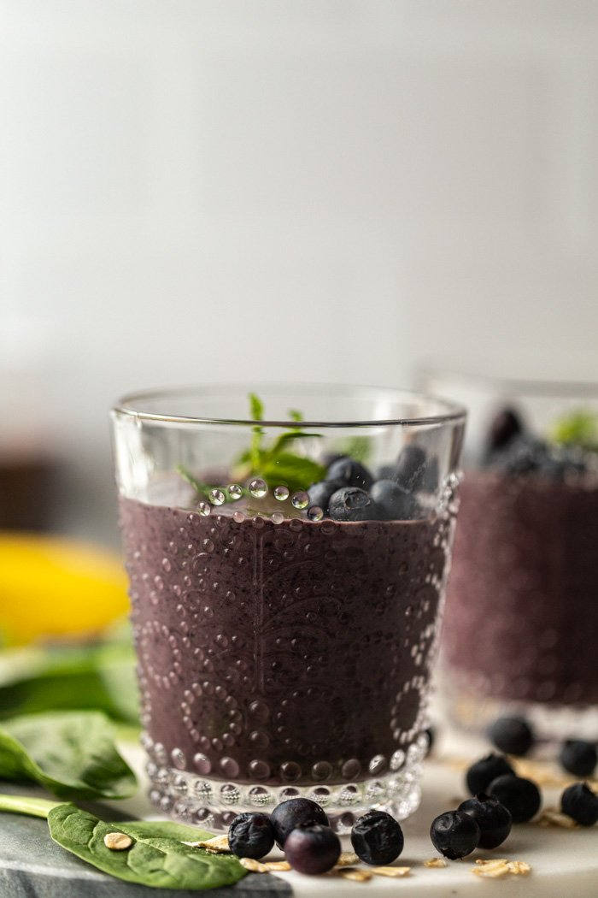

Blueberry Smoothie

Yummy and super easy smoothie! As with most smoothies, the recipe is pretty forgiving and you can make whatever modifications you'd like!
Ingredients
- 1 large handful of greens (I usually use spinach)
- 1 cup almond milk
- 1 cup blueberries (preferably frozen)
- 1/2 banana
- 1/8 cup rolled oats
- 1 tbsp almond butter
Steps
- In a blender, combine almond milk and greens. Blend until completely liquified (about 60 seconds).
- Add in the remaining ingredients and blend until smooth. You may nee to add a bit more liquid halfway through the blending process.